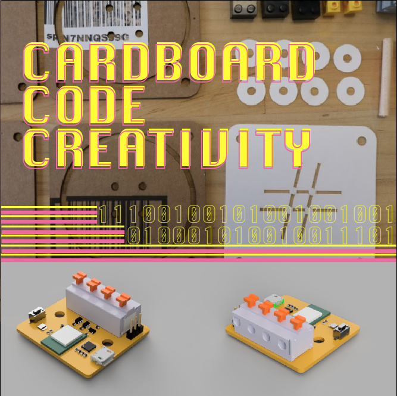

Cardboard, Code, Creativity
About this workshop
In this multi-session and collaborative experimentation workshop, we will challenge you to explore creative programming while developing learning experiences with code, cardboard, and electronics. Join special guests Kreg Hanning (Scratch / MIT) & Brian Silverman (Playful Invention Company / MIT) as we look at the design of educational technology that is deceptively simple yet potent enough to scale into various creative workflows.
Kicking off this workshop will be an introduction of a new general-purpose microcontroller board tentatively called the CraftyBits Gio which is programmable through a scratch-like environment and— surprise—LOGO. This board is designed to provide a fresh approach to programming hardware for teachers, artists, and tinkerers of all types. The simplicity of the CraftyBit Gio is what makes it so appealing—there’s no avrdude in sight.
Learn how its design can be used to maximize the time spent exercising creativity while making, tinkering, and embedding electronics and code into objects. Experiment with us and share your experiences with the CraftyBit Gio platform at Fab16.
THE FIRST 8 LABS TO REGISTER IN THIS PLAYFUL EXCHANGE DURING FAB16 WILL RECEIVE A FREE SET OF 5 CRAFTYBIT GIO BOARDS COURTESY OF THE LCC FAB LAB.
* Details and materials to be sent prior to the event
Presenters
Kreg Hanning (Scratch / MIT)
Brian Silverman (Playful Invention Company / MIT)
Alec Mathewson (LCC Fab Lab)